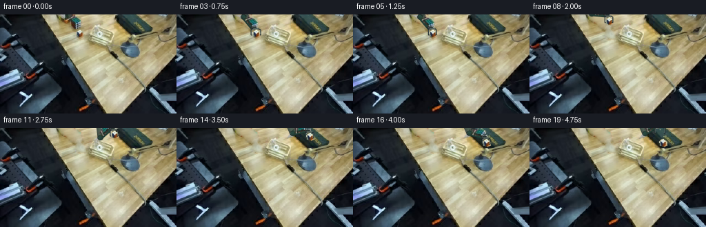
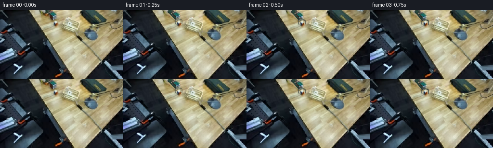
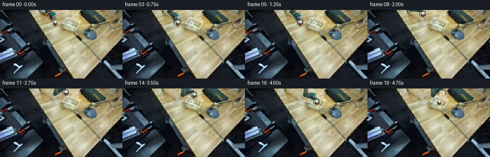

CODING AGENTS AS PIXEL WORLD MODELS
traex/GPT-6.1-Sol · common50_0010
点击播放 · 原生 RGB 像素
逐轮保存的候选
回放视频、检查图与代码变化。
每份候选均可单独播放。实际图片检查记录在下方工具轨迹中。
候选 01播放与检查图
点击播放 · 原生 RGB 像素


展开代码变化
--- 上一保存版本
+++ 本次保存版本
@@ -0,0 +1,193 @@
+"""Deterministic RGB pick-and-place animation, using only the supplied frame.
+
+A fixed image plane is retained. Articulated links use fixed length inverse
+kinematics; image textures are rigidly transformed, not morphed. The cube's
+pose is constant during the grasp and it is released into the container.
+"""
+from pathlib import Path
+import numpy as np
+from PIL import Image, ImageDraw, ImageFilter
+import artifact_io
+
+ROOT = Path(__file__).resolve().parent
+W,H,S = 256,144,4
+im = np.array(Image.open(ROOT/'first_frame.png').convert('RGB'))
+yy,xx = np.mgrid[:H,:W]
+
+def poly_mask(points):
+ m=Image.new('L',(W,H));ImageDraw.Draw(m).polygon(points,fill=255)
+ return np.array(m)/255.
+
+# The small multicoloured cube has a white top, blue left and red right face.
+cube_poly=[(110,25),(113,22),(116,22),(119,24),(121,26),(121,31),(117,33),(111,31)]
+cube_m=poly_mask(cube_poly)
+# Matte articulated robot at the upper edge. Colour gates keep wood pixels out
+# of the moving texture, including the soft silhouette antialiasing.
+arm_poly=[(85,0),(107,0),(110,3),(114,4),(117,10),(117,18),(115,22),
+ (108,22),(104,19),(101,15),(99,12),(93,11),(86,7)]
+region=poly_mask(arm_poly)
+r,g,b=im.astype(float).transpose(2,0,1)
+material=((r-g<19)&(r-b<29)).astype(float)
+arm_m=region*material
+# Small shadow left by the arm is also cleared once it starts to move.
+arm_hole=poly_mask([(85,0),(107,0),(112,4),(117,9),(118,20),(115,23),
+ (108,22),(104,20),(100,16),(97,13),(92,11),(86,7)])
+
+# Boundary-constrained numerical texture reconstruction of newly uncovered wood.
+# No external images/models: screened harmonic filling uses local source grain.
+def fill_wood(source,mask):
+ mask=mask>0
+ a=source.astype(float).copy()
+ # nearest clean samples in the direction of the wood grain
+ seed=np.empty_like(a)
+ for y in range(H):
+ for x in range(W):
+ sx=min(W-1,x+25)
+ sy=y
+ if mask[sy,sx]:sx=min(W-1,x+38)
+ seed[y,x]=source[sy,sx]
+ a[mask]=seed[mask]
+ # Smooth the low frequencies while retaining the sampled local grain.
+ low=np.array(Image.fromarray(np.uint8(seed)).filter(ImageFilter.GaussianBlur(1.3))).astype(float)
+ grain=np.clip(seed-low,-5,5)
+ for _ in range(520):
+ p=np.pad(a,((1,1),(1,1),(0,0)),mode='edge')
+ avg=(p[:-2,1:-1]+p[2:,1:-1]+p[1:-1,:-2]+p[1:-1,2:])/4
+ a[mask]=.96*avg[mask]+.04*low[mask]
+ a[mask]+=grain[mask]*.55
+ return np.uint8(np.clip(a,0,255))
+
+bg_arm=fill_wood(im,arm_hole)
+cube_hole=poly_mask([(109,24),(113,21),(117,21),(122,25),(124,30),
+ (124,34),(118,36),(111,34),(108,29)])
+bg=fill_wood(bg_arm,cube_hole)
+
+def texture(mask):
+ rgba=np.dstack([im,np.uint8(np.clip(mask*255,0,255))])
+ return Image.fromarray(rgba,'RGBA')
+
+E0=np.array([96.,3.]);Q0=np.array([110.,17.])
+B=np.array([137.,-64.])
+L1=np.linalg.norm(E0-B);L2=np.linalg.norm(Q0-E0)
+vec=(Q0-E0)/L2
+proj=(xx-E0[0])*vec[0]+(yy-E0[1])*vec[1]
+upper_m=arm_m*(proj<3.0)
+fore_m=arm_m*(proj>=2.0)*(yy<15)
+grip_m=arm_m*(yy>=14)
+upper_tex=texture(upper_m)
+fore_tex=texture(fore_m)
+grip_tex=texture(grip_m)
+cube_tex=texture(cube_m)
+
+# Affine transforms use the same scale for every frame, preserving rigid texture.
+def rigid(sprite,anchor0,anchor1,theta=0):
+ co,si=np.cos(theta),np.sin(theta)
+ R=np.array([[co,si],[-si,co]]) # inverse rotation
+ off=np.asarray(anchor0)-R@np.asarray(anchor1)
+ coeff=(R[0,0]/S,R[0,1]/S,off[0],R[1,0]/S,R[1,1]/S,off[1])
+ return sprite.transform((W*S,H*S),Image.Transform.AFFINE,coeff,
+ Image.Resampling.BICUBIC)
+
+Y,X=np.mgrid[:H*S,:W*S].astype(float);X=(X+.5)/S;Y=(Y+.5)/S
+
+def tube(a,b,radius,base):
+ a,b=np.array(a),np.array(b);v=b-a;ll=np.linalg.norm(v);u=v/ll
+ t=(X-a[0])*u[0]+(Y-a[1])*u[1]
+ d=(X-a[0])*(-u[1])+(Y-a[1])*u[0]
+ end=np.maximum(-t,0)+np.maximum(t-ll,0)
+ dist=np.sqrt(d*d+end*end)
+ coverage=np.clip((radius-dist)*S+.5,0,1)
+ k=np.clip(d/radius,-1,1)
+ # rounded metallic section, fixed illumination from top left
+ shading=.65+.37*np.sqrt(np.clip(1-k*k,0,1))-.12*k
+ grain=.8*np.sin(t*3.1+d*2.4)+.5*np.sin(t*8.7-d*5.3)
+ rgb=np.clip(np.array(base)[None,None,:]*shading[:,:,None]+grain[:,:,None],0,255)
+ return Image.fromarray(np.dstack([rgb,np.uint8(coverage*255)]).astype('uint8'),'RGBA')
+
+def joint(canvas,p,size=4.2):
+ d=ImageDraw.Draw(canvas)
+ x,y=p
+ def el(rx,ry,color):d.ellipse(((x-rx)*S,(y-ry)*S,(x+rx)*S,(y+ry)*S),fill=color)
+ el(size,size*.88,(36,44,41,255))
+ el(size-.8,size*.88-.7,(102,114,106,255))
+ el(size-1.6,size*.88-1.5,(62,77,69,255))
+ el(1.1,.95,(127,137,129,255))
+
+def ik(q):
+ v=np.array(q)-B;dist=np.linalg.norm(v);u=v/dist
+ a=(L1*L1-L2*L2+dist*dist)/(2*dist)
+ h=np.sqrt(max(0,L1*L1-a*a))
+ return B+a*u+h*np.array([-u[1],u[0]])
+
+def smooth(t):
+ t=np.clip(t,0,1);return t*t*(3-2*t)
+# Robot wrist key poses. First approach; then a clear vertical lift; a horizontal
+# transfer over the rim; lower/release and retract.
+keys=[(0,(110,17)),(3,(110,19)),(5,(110,19)),(8,(110,1)),
+ (13,(188,1)),(16,(188,13)),(17,(188,13)),(19,(184,-3))]
+def q_at(i):
+ for (ta,a),(tb,b) in zip(keys[:-1],keys[1:]):
+ if ta<=i<=tb:
+ z=smooth((i-ta)/(tb-ta));return (1-z)*np.array(a)+z*np.array(b)
+ return np.array(keys[-1][1],float)
+
+def jaws(canvas,q,opening,opacity=255):
+ # Fixed vertical tool orientation is supplied by the wrist servo.
+ # Closed jaws contact the left and right sides, leaving the white face visible.
+ q=np.array(q);c=q+np.array([5.,8.])
+ d=ImageDraw.Draw(canvas)
+ cx,cy=c
+ def line(points,col,width):
+ d.line([(int(x*S),int(y*S)) for x,y in points],fill=(*col,opacity),width=int(width*S),joint='curve')
+ line([q,q+[4,-.2],(cx,cy-7.1)],(43,54,51),3.0)
+ line([(cx-4.4,cy-6.4),(cx+4.4,cy-6.4)],(82,94,88),2.3)
+ for sign in [-1,1]:
+ x=cx+sign*opening
+ line([(cx+sign*3.8,cy-6.1),(x,cy-4.9),(x,cy+2.8)],(34,43,43),1.65)
+ line([(x-sign*.35,cy-4.8),(x-sign*.35,cy+2.5)],(112,128,122),.6)
+ line([(x,cy+2.8),(x-sign*1.1,cy+2.8)],(32,36,36),1.3)
+
+# Subpixel shadow rendering against the unchanged source plane.
+def cube_shadow(frame,c,amount=.18):
+ cx,cy=c
+ shadow=Image.new('L',(W*S,H*S));d=ImageDraw.Draw(shadow)
+ d.ellipse(((cx-6)*S,(cy+4)*S,(cx+9)*S,(cy+8)*S),fill=int(255*amount))
+ shadow=shadow.filter(ImageFilter.GaussianBlur(1.2*S)).resize((W,H),Image.Resampling.LANCZOS)
+ alpha=np.array(shadow).astype(float)/255
+ return np.uint8(frame.astype(float)*(1-alpha[:,:,None]))
+
+frames=[]
+for i in range(20):
+ if i==0:
+ frames.append(im.copy());continue
+ q=q_at(i);e=ik(q)
+ held=5<=i<=16
+ if i<=5:c=np.array([115.,27.])
+ elif i<=16:c=q+np.array([5.,8.])
+ else:c=np.array([193.,21.])
+ # Keep source shadows until the object actually leaves the tabletop.
+ background=bg_arm.copy() if i<=5 else bg.copy()
+ if i>5:
+ h=max(0,27-c[1]);background=cube_shadow(background,c,.19 if i>=14 else .08)
+ layer=Image.new('RGBA',(W*S,H*S))
+ # All cube pixels are translated as one body, retaining the three face grids.
+ layer.alpha_composite(rigid(cube_tex,[115,27],c))
+ # A rigid first link always terminates at the analytically computed elbow.
+ layer.alpha_composite(tube(B,e,4.2,(78,94,83)))
+ th1=np.arctan2(*(e-B)[::-1])-np.arctan2(*(E0-B)[::-1])
+ layer.alpha_composite(rigid(upper_tex,E0,e,th1))
+ joint(layer,e)
+ theta=np.arctan2(*(q-e)[::-1])-np.arctan2(*(Q0-E0)[::-1])
+ layer.alpha_composite(tube(e,q,3.3,(40,69,60)))
+ layer.alpha_composite(rigid(fore_tex,E0,e,theta))
+ layer.alpha_composite(rigid(grip_tex,Q0,q))
+ opening=6.9 if i<3 else 6.9-1.35*smooth((i-3)/2) if i<5 else 5.55 if i<=16 else 7.25
+ jaws(layer,q,opening,opacity=min(255,75+i*60))
+ small=layer.resize((W,H),Image.Resampling.LANCZOS)
+ out=Image.alpha_composite(Image.fromarray(background).convert('RGBA'),small).convert('RGB')
+ frames.append(np.array(out))
+frames=np.asarray(frames,dtype=np.uint8)
+# Required reproducible outputs plus local intermediate for numerical inspection.
+np.save(ROOT/'.tmp'/'candidate.npy',frames)
+artifact_io.save(frames,ROOT)
+print('Saved',frames.shape,'first frame identical:',np.array_equal(frames[0],im))
候选 02播放与检查图
点击播放 · 原生 RGB 像素

展开代码变化
--- 上一保存版本
+++ 本次保存版本
@@ -124,7 +124,7 @@
# Robot wrist key poses. First approach; then a clear vertical lift; a horizontal
# transfer over the rim; lower/release and retract.
keys=[(0,(110,17)),(3,(110,19)),(5,(110,19)),(8,(110,1)),
- (13,(188,1)),(16,(188,13)),(17,(188,13)),(19,(184,-3))]
+ (13,(144,1)),(16,(144,21)),(17,(144,21)),(19,(151,1))]
def q_at(i):
for (ta,a),(tb,b) in zip(keys[:-1],keys[1:]):
if ta<=i<=tb:
@@ -164,7 +164,7 @@
held=5<=i<=16
if i<=5:c=np.array([115.,27.])
elif i<=16:c=q+np.array([5.,8.])
- else:c=np.array([193.,21.])
+ else:c=np.array([149.,29.])
# Keep source shadows until the object actually leaves the tabletop.
background=bg_arm.copy() if i<=5 else bg.copy()
if i>5:
@@ -185,7 +185,15 @@
jaws(layer,q,opening,opacity=min(255,75+i*60))
small=layer.resize((W,H),Image.Resampling.LANCZOS)
out=Image.alpha_composite(Image.fromarray(background).convert('RGBA'),small).convert('RGB')
- frames.append(np.array(out))
+ out=np.array(out)
+ # The near wall of the wooden crate occludes an inserted object's bottom.
+ # The original rim and slat texture remains fixed, including its highlights.
+ if i>=14:
+ nearwall=poly_mask([(128,28),(162,39),(162,44),(128,33)])
+ cube_bottom=(xx>142)&(xx<157)&(yy>33)&(yy<40)
+ occlusion=nearwall*cube_bottom
+ out=np.uint8(out*(1-occlusion[:,:,None])+im*occlusion[:,:,None])
+ frames.append(out)
frames=np.asarray(frames,dtype=np.uint8)
# Required reproducible outputs plus local intermediate for numerical inspection.
np.save(ROOT/'.tmp'/'candidate.npy',frames)
可观测工具轨迹
实际执行的命令与返回图片。
命令 1exit 0
/bin/bash -lc 'ls -la && cat prompt.txt && cat GENERATION_RULES.md'
命令 2exit 0
/bin/bash -lc "cat task_spec.json && cat artifact_io.py && python - <<'PY'
from PIL import Image
import numpy as np
im=np.array(Image.open('first_frame.png'))
print(im.shape)
# Display numeric-derived text luminance map.
a=np.array(Image.fromarray(im).resize((128,72)))
chars=' .:-=+*#%@'
y=a.mean(2)
for row in y:
print(''.join(chars[min(9,int(v)*10//256)] for v in row))
# Palette text: identify dark, wood, yellow, white, cool colors
print('\\nCOLOR MAP')
for row in a:
line=''
for r,g,b in row.astype(int):
if max(r,g,b)<40: c='K'
elif max(r,g,b)-min(r,g,b)<18:c='W' if r>205 else 'o' if r>155 else ':' if r>95 else '.'
elif r>g*1.2 and g>b*1.15:c='t' if r<170 else 'T'
elif r>200 and g>170 and b<120:c='Y'
elif b>r*1.15:c='B'
elif r>g*1.2:c='R'
else:c='w' if min(r,g,b)>165 else ','
line+=c
print(line)
PY"命令 3exit 0
/bin/bash -lc "python - <<'PY'
from PIL import Image
import numpy as np
im=np.array(Image.open('first_frame.png'))
for y in range(0,144,6):
print('y',y, ' '.join(f'{x}:{tuple(im[y,x])}' for x in range(0,256,12)))
PY"命令 4exit 0
/bin/bash -lc "python - <<'PY'
from PIL import Image
import numpy as np
im=np.array(Image.open('first_frame.png')).astype(int)
# All large objects individually (1 character per pixel luminance)
chars=' .,:;irsXA253hMHGS#9B&@'
for box in [(90,0,164,46),(150,30,207,74),(0,65,90,135),(70,0,115,30)]:
x0,y0,x1,y1=box
print('\\nCROP',box)
for y in range(y0,y1):
print(f'{y:3d} '+''.join(chars[min(len(chars)-1,int(np.mean(im[y,x]))*len(chars)//256)] for x in range(x0,x1)))
print('COLOR')
for y in range(y0,y1):
line=''
for x in range(x0,x1):
r,g,b=im[y,x]
if max(r,g,b)<30:c=' '
elif max(r,g,b)-min(r,g,b)<22:c='W' if min(r,g,b)>210 else 'w' if min(r,g,b)>150 else 'g' if min(r,g,b)>70 else '.'
elif b-r>35:c='B' if b>170 else 'b'
elif b-r>10:c='c' if b>150 else ':'
elif g-r>15:c='G'
elif r-g>45:c='R'
elif g-b>40:c='T' if r>170 else 't'
elif g-b>20:c='o'
else:c='n'
line+=c
print(f'{y:3d} '+line)
PY"命令 5exit 0
/bin/bash -lc "python - <<'PY'
from PIL import Image
import numpy as np
im=np.array(Image.open('first_frame.png')).astype(int)
# Bright neutral image map central top
for y in range(0,50):
print(f'{y:02} '+''.join('W' if min(im[y,x])>215 else 'w' if min(im[y,x])>180 and max(im[y,x])-min(im[y,x])<27 else '+' if max(im[y,x])>180 and max(im[y,x])-min(im[y,x])<40 else '.' if im[y,x].mean()>100 else ' ' for x in range(70,181)))
print('\\nCENTRAL EXACT LUMINANCE QUANTIZED (x128-166)')
for y in range(12,42):
print(f'{y:02} '+' '.join(f'{int(im[y,x].mean()):3}' for x in range(128,166)))
PY"命令 6exit 0
/bin/bash -lc "python - <<'PY'
from PIL import Image
import numpy as np
im=np.array(Image.open('first_frame.png')).astype(int)
for box in [(170,36,200,64),(102,19,124,37),(85,0,115,24),(128,12,175,45)]:
x0,y0,x1,y1=box
print('\\n',box)
for y in range(y0,y1):
print(f'{y:3}', ' '.join(f'{im[y,x,0]:02x}{im[y,x,1]:02x}{im[y,x,2]:02x}' for x in range(x0,x1)))
PY"命令 7exit 0
/bin/bash -lc "python - <<'PY'
from PIL import Image
import numpy as np
im=np.array(Image.open('first_frame.png')).astype(int)
# Compress green/blue robot/object pixels at full resolution top right
for y in range(0,72):
print(f'{y:02} '+''.join('B' if im[y,x,2]-im[y,x,0]>30 else 'c' if im[y,x,2]-im[y,x,0]>8 else 'G' if im[y,x,1]-im[y,x,0]>12 else '#' if max(im[y,x])<35 else 's' if max(im[y,x])<85 else 'W' if min(im[y,x])>220 else '+' if min(im[y,x])>175 else '.' for x in range(80,225)))
PY"命令 8exit 0
/bin/bash -lc "python - <<'PY'
from PIL import Image
import numpy as np
im=np.array(Image.open('first_frame.png')).astype(int)
for y in range(0,35):
print(f'{y:2}', ''.join(' ' if max(im[y,x])<32 else 'a' if (im[y,x,2]-im[y,x,0]>5) else 'W' if min(im[y,x])>200 else 'g' if max(im[y,x])-min(im[y,x])<22 else 'r' if im[y,x,0]-im[y,x,1]>32 else 't' for x in range(87,126)))
PY"命令 9exit 0
/bin/bash -lc "python - <<'PY'
from PIL import Image
import numpy as np
im=np.array(Image.open('first_frame.png')).astype(int)
# Scene with color encoded text; 2 pixel horizontal bins full height with indexed coordinates
print(' '+''.join(str((2*x)//10%10) for x in range(128)))
print(' '+''.join(str((2*x)%10) for x in range(128)))
a=np.array(Image.fromarray(im.astype('uint8')).resize((128,144))).astype(int)
for y in range(0,144,2):
s=''
for r,g,b in a[y]:
c=' '
if max(r,g,b)<28:c=' '
elif b-r>25:c='B' if b>180 else 'b'
elif b-r>9:c='c'
elif g-r>12:c='G'
elif max(r,g,b)-min(r,g,b)<17:c='W' if min(r,g,b)>205 else 'w' if min(r,g,b)>140 else 'g' if min(r,g,b)>75 else ':'
elif r-g>40:c='R'
elif g-b>40:c='T' if r>180 else 't'
elif g-b>22:c='o'
else:c='.'
s+=c
print(f'{y:3} '+s)
PY"命令 10exit 0
/bin/bash -lc "python - <<'PY'
from PIL import Image
import numpy as np
im=np.array(Image.open('first_frame.png')).astype(int)
chars=' .,:irsX23hMG#B@'
for y in range(0,67):
print(f'{y:2} '+''.join(chars[min(len(chars)-1,int(im[y,x].mean())*len(chars)//256)] for x in range(167,226)))
print('COLUMNS 177-215 y26-43')
for y in range(25,44):
print(f'{y:02}', ' '.join(f'{im[y,x,0]:02x}{im[y,x,1]:02x}{im[y,x,2]:02x}' for x in range(178,219,2)))
PY"命令 11exit 0
/bin/bash -lc "python - <<'PY'
from PIL import Image
import numpy as np
im=np.array(Image.open('first_frame.png')).astype(int)
# central region: map RGB hue and luminance for each pixel into readable material classes.
for y in range(10,44):
s=''
for x in range(124,174):
r,g,b=im[y,x]
if min(r,g,b)>235:c='@'
elif min(r,g,b)>210 and max(r,g,b)-min(r,g,b)<33:c='W'
elif min(r,g,b)>185 and max(r,g,b)-min(r,g,b)<33:c='w'
elif min(r,g,b)>155 and max(r,g,b)-min(r,g,b)<33:c='n'
elif g>r and g>b:c='G'
elif b>r+8:c='B'
elif g-b>20:c='.' if r>185 else ',' if r>145 else ':' if r>105 else ';'
else:c='+' if r>180 else '-' if r>135 else '=' if r>95 else 's'
s+=c
print(f'{y:2} {s}')
print('indexed top 22: cube?')
for y in range(0,22):
print(f'{y:2} '+' '.join(f'{im[y,x,0]:02x}{im[y,x,1]:02x}{im[y,x,2]:02x}' for x in range(90,115)))
PY"命令 12exit 0
/bin/bash -lc "python - <<'PY' import numpy as np for b,L1,L2 in [(np.array([140.,-20]),43,30),(np.array([136.,-32]),55,28),(np.array([141.,-18]),43,31)]: w=np.array([110.,18]);v=w-b;d=np.linalg.norm(v);u=v/d;a=(L1**2-L2**2+d*d)/(2*d);h=np.sqrt(L1*L1-a*a) for s in [-1,1]:print(b,L1,L2,b+a*u+s*h*np.array([-u[1],u[0]])) PY"
命令 13exit 0
/bin/bash -lc "python - <<'PY'
from PIL import Image
import numpy as np
from scipy.ndimage import label
im=np.array(Image.open('first_frame.png')).astype(float)
r,g,b=im.transpose(2,0,1)
m=(r-g<9)&(g-b<36)&(r>135)
m[:,:126]=False;m[:,173:]=False;m[48:]=False
lab,n=label(m)
for i in range(1,n+1):
ys,xs=np.where(lab==i)
if len(ys)>3:print(len(ys), (xs.min(),ys.min(),xs.max(),ys.max()))
for y in range(0,48):print(f'{y:02} '+''.join('#' if m[y,x] else ' ' for x in range(126,175)))
PY"命令 14exit 0
/bin/bash -lc "python - <<'PY' import numpy as np for B,l1,l2 in [((119,-22),36,23),((115,-21),30,23),((115,-22),31,22),((115,-22),33,21),((123,-20),37,23)]: b=np.array(B);w=np.array([112,19]);v=w-b;d=np.linalg.norm(v);a=(l1*l1-l2*l2+d*d)/(2*d);h=np.sqrt(l1*l1-a*a);u=v/d e=b+a*u+h*np.array([-u[1],u[0]]) print(B,l1,l2,e) PY"
命令 15exit 0
/bin/bash -lc "python - <<'PY'
import numpy as np
from PIL import Image
im=np.array(Image.open('first_frame.png')).astype(int)
print('CENTRAL COLOR R/G/B: x136..149 y0..14')
for y in range(15):print(y, ' '.join(f'{im[y,x,0]:02x}{im[y,x,1]:02x}{im[y,x,2]:02x}' for x in range(136,150)))
PY"命令 16exit 0
/bin/bash -lc "python - <<'PY' import numpy as np B=np.array([151.,-24]); l1=43;l2=14 for w in [(147,31),(115,10),(194,-1),(172,-7)]: w=np.array(w);v=w-B;d=np.linalg.norm(v);a=(l1*l1-l2*l2+d*d)/(2*d);h=np.sqrt(max(0,l1*l1-a*a));u=v/d print(w,d, B+a*u+h*np.array([-u[1],u[0]]),B+a*u-h*np.array([-u[1],u[0]])) PY"
命令 17exit 0
/bin/bash -lc "python - <<'PY' import numpy as np B=np.array([131.,-64]);E=np.array([96.,3]);W=np.array([110.,17]);l1=np.linalg.norm(E-B);l2=np.linalg.norm(W-E) for w in [(110,17),(113,19),(112,-3),(143,-4),(188,-4),(189,7),(189,-3)]: w=np.array(w);v=w-B;d=np.linalg.norm(v);a=(l1*l1-l2*l2+d*d)/(2*d);h=np.sqrt(max(0,l1*l1-a*a));u=v/d e=B+a*u+h*np.array([-u[1],u[0]]) print(w,'E',e,'d',d,'lens',l1,l2) PY"
命令 18exit 0
/bin/bash -lc "python - <<'PY'
from PIL import Image
import numpy as np
im=np.array(Image.open('first_frame.png')).astype(int)
# tiny label map on x124..209 y10..64 threshold showing likely robot vs wood.
print(' '+''.join(str(x//10%10) for x in range(124,210)))
print(' '+''.join(str(x%10) for x in range(124,210)))
for y in range(10,65):
line=''
for x in range(124,210):
r,g,b=im[y,x]
if b-r>10:c='B' if b>160 else 'b'
elif min(r,g,b)>230:c='@'
elif max(r,g,b)-min(r,g,b)<36 and min(r,g,b)>210:c='W'
elif max(r,g,b)-min(r,g,b)<36 and min(r,g,b)>185:c='w'
elif max(r,g,b)-min(r,g,b)<36 and min(r,g,b)>140:c='n'
elif g>r+2 and g>b+15:c='G'
elif max(r,g,b)<40:c=' '
elif max(r,g,b)<80:c='s'
else:c='.'
line+=c
print(f'{y:02} '+line)
PY"命令 19exit 0
/bin/bash -lc "python - <<'PY' import numpy as np B=np.array([137.,-64]);E=np.array([96.,3]);W=np.array([110.,17]);l1=np.linalg.norm(E-B);l2=np.linalg.norm(W-E) for w in [(116,20),(116,8),(126,-2),(145,-2),(173,-2),(194,-2),(194,9),(193,-4),(181,-10)]: w=np.array(w);v=w-B;d=np.linalg.norm(v);a=(l1*l1-l2*l2+d*d)/(2*d);h=np.sqrt(max(0,l1*l1-a*a));u=v/d e=B+a*u+h*np.array([-u[1],u[0]]) print(w,'E',e,'d',d,'max',l1+l2) PY"
命令 20exit 0
/bin/bash -lc "cat > generate.py <<'PY'
\"\"\"Deterministic RGB pick-and-place animation, using only the supplied frame.
A fixed image plane is retained. Articulated links use fixed length inverse
kinematics; image textures are rigidly transformed, not morphed. The cube's
pose is constant during the grasp and it is released into the container.
\"\"\"
from pathlib import Path
import numpy as np
from PIL import Image, ImageDraw, ImageFilter
import artifact_io
ROOT = Path(__file__).resolve().parent
W,H,S = 256,144,4
im = np.array(Image.open(ROOT/'first_frame.png').convert('RGB'))
yy,xx = np.mgrid[:H,:W]
def poly_mask(points):
m=Image.new('L',(W,H));ImageDraw.Draw(m).polygon(points,fill=255)
return np.array(m)/255.
# The small multicoloured cube has a white top, blue left and red right face.
cube_poly=[(110,25),(113,22),(116,22),(119,24),(121,26),(121,31),(117,33),(111,31)]
cube_m=poly_mask(cube_poly)
# Matte articulated robot at the upper edge. Colour gates keep wood pixels out
# of the moving texture, including the soft silhouette antialiasing.
arm_poly=[(85,0),(107,0),(110,3),(114,4),(117,10),(117,18),(115,22),
(108,22),(104,19),(101,15),(99,12),(93,11),(86,7)]
region=poly_mask(arm_poly)
r,g,b=im.astype(float).transpose(2,0,1)
material=((r-g<19)&(r-b<29)).astype(float)
arm_m=region*material
# Small shadow left by the arm is also cleared once it starts to move.
arm_hole=poly_mask([(85,0),(107,0),(112,4),(117,9),(118,20),(115,23),
(108,22),(104,20),(100,16),(97,13),(92,11),(86,7)])
# Boundary-constrained numerical texture reconstruction of newly uncovered wood.
# No external images/models: screened harmonic filling uses local source grain.
def fill_wood(source,mask):
mask=mask>0
a=source.astype(float).copy()
# nearest clean samples in the direction of the wood grain
seed=np.empty_like(a)
for y in range(H):
for x in range(W):
sx=min(W-1,x+25)
sy=y
if mask[sy,sx]:sx=min(W-1,x+38)
seed[y,x]=source[sy,sx]
a[mask]=seed[mask]
# Smooth the low frequencies while retaining the sampled local grain.
low=np.array(Image.fromarray(np.uint8(seed)).filter(ImageFilter.GaussianBlur(1.3))).astype(float)
grain=np.clip(seed-low,-5,5)
for _ in range(520):
p=np.pad(a,((1,1),(1,1),(0,0)),mode='edge')
avg=(p[:-2,1:-1]+p[2:,1:-1]+p[1:-1,:-2]+p[1:-1,2:])/4
a[mask]=.96*avg[mask]+.04*low[mask]
a[mask]+=grain[mask]*.55
return np.uint8(np.clip(a,0,255))
bg_arm=fill_wood(im,arm_hole)
cube_hole=poly_mask([(109,24),(113,21),(117,21),(122,25),(124,30),
(124,34),(118,36),(111,34),(108,29)])
bg=fill_wood(bg_arm,cube_hole)
def texture(mask):
rgba=np.dstack([im,np.uint8(np.clip(mask*255,0,255))])
return Image.fromarray(rgba,'RGBA')
E0=np.array([96.,3.]);Q0=np.array([110.,17.])
B=np.array([137.,-64.])
L1=np.linalg.norm(E0-B);L2=np.linalg.norm(Q0-E0)
vec=(Q0-E0)/L2
proj=(xx-E0[0])*vec[0]+(yy-E0[1])*vec[1]
upper_m=arm_m*(proj<3.0)
fore_m=arm_m*(proj>=2.0)*(yy<15)
grip_m=arm_m*(yy>=14)
upper_tex=texture(upper_m)
fore_tex=texture(fore_m)
grip_tex=texture(grip_m)
cube_tex=texture(cube_m)
# Affine transforms use the same scale for every frame, preserving rigid texture.
def rigid(sprite,anchor0,anchor1,theta=0):
co,si=np.cos(theta),np.sin(theta)
R=np.array([[co,si],[-si,co]]) # inverse rotation
off=np.asarray(anchor0)-R@np.asarray(anchor1)
coeff=(R[0,0]/S,R[0,1]/S,off[0],R[1,0]/S,R[1,1]/S,off[1])
return sprite.transform((W*S,H*S),Image.Transform.AFFINE,coeff,
Image.Resampling.BICUBIC)
Y,X=np.mgrid[:H*S,:W*S].astype(float);X=(X+.5)/S;Y=(Y+.5)/S
def tube(a,b,radius,base):
a,b=np.array(a),np.array(b);v=b-a;ll=np.linalg.norm(v);u=v/ll
t=(X-a[0])*u[0]+(Y-a[1])*u[1]
d=(X-a[0])*(-u[1])+(Y-a[1])*u[0]
end=np.maximum(-t,0)+np.maximum(t-ll,0)
dist=np.sqrt(d*d+end*end)
coverage=np.clip((radius-dist)*S+.5,0,1)
k=np.clip(d/radius,-1,1)
# rounded metallic section, fixed illumination from top left
shading=.65+.37*np.sqrt(np.clip(1-k*k,0,1))-.12*k
grain=.8*np.sin(t*3.1+d*2.4)+.5*np.sin(t*8.7-d*5.3)
rgb=np.clip(np.array(base)[None,None,:]*shading[:,:,None]+grain[:,:,None],0,255)
return Image.fromarray(np.dstack([rgb,np.uint8(coverage*255)]).astype('uint8'),'RGBA')
def joint(canvas,p,size=4.2):
d=ImageDraw.Draw(canvas)
x,y=p
def el(rx,ry,color):d.ellipse(((x-rx)*S,(y-ry)*S,(x+rx)*S,(y+ry)*S),fill=color)
el(size,size*.88,(36,44,41,255))
el(size-.8,size*.88-.7,(102,114,106,255))
el(size-1.6,size*.88-1.5,(62,77,69,255))
el(1.1,.95,(127,137,129,255))
def ik(q):
v=np.array(q)-B;dist=np.linalg.norm(v);u=v/dist
a=(L1*L1-L2*L2+dist*dist)/(2*dist)
h=np.sqrt(max(0,L1*L1-a*a))
return B+a*u+h*np.array([-u[1],u[0]])
def smooth(t):
t=np.clip(t,0,1);return t*t*(3-2*t)
# Robot wrist key poses. First approach; then a clear vertical lift; a horizontal
# transfer over the rim; lower/release and retract.
keys=[(0,(110,17)),(3,(110,19)),(5,(110,19)),(8,(110,1)),
(13,(188,1)),(16,(188,13)),(17,(188,13)),(19,(184,-3))]
def q_at(i):
for (ta,a),(tb,b) in zip(keys[:-1],keys[1:]):
if ta<=i<=tb:
z=smooth((i-ta)/(tb-ta));return (1-z)*np.array(a)+z*np.array(b)
return np.array(keys[-1][1],float)
def jaws(canvas,q,opening,opacity=255):
# Fixed vertical tool orientation is supplied by the wrist servo.
# Closed jaws contact the left and right sides, leaving the white face visible.
q=np.array(q);c=q+np.array([5.,8.])
d=ImageDraw.Draw(canvas)
cx,cy=c
def line(points,col,width):
d.line([(int(x*S),int(y*S)) for x,y in points],fill=(*col,opacity),width=int(width*S),joint='curve')
line([q,q+[4,-.2],(cx,cy-7.1)],(43,54,51),3.0)
line([(cx-4.4,cy-6.4),(cx+4.4,cy-6.4)],(82,94,88),2.3)
for sign in [-1,1]:
x=cx+sign*opening
line([(cx+sign*3.8,cy-6.1),(x,cy-4.9),(x,cy+2.8)],(34,43,43),1.65)
line([(x-sign*.35,cy-4.8),(x-sign*.35,cy+2.5)],(112,128,122),.6)
line([(x,cy+2.8),(x-sign*1.1,cy+2.8)],(32,36,36),1.3)
# Subpixel shadow rendering against the unchanged source plane.
def cube_shadow(frame,c,amount=.18):
cx,cy=c
shadow=Image.new('L',(W*S,H*S));d=ImageDraw.Draw(shadow)
d.ellipse(((cx-6)*S,(cy+4)*S,(cx+9)*S,(cy+8)*S),fill=int(255*amount))
shadow=shadow.filter(ImageFilter.GaussianBlur(1.2*S)).resize((W,H),Image.Resampling.LANCZOS)
alpha=np.array(shadow).astype(float)/255
return np.uint8(frame.astype(float)*(1-alpha[:,:,None]))
frames=[]
for i in range(20):
if i==0:
frames.append(im.copy());continue
q=q_at(i);e=ik(q)
held=5<=i<=16
if i<=5:c=np.array([115.,27.])
elif i<=16:c=q+np.array([5.,8.])
else:c=np.array([193.,21.])
# Keep source shadows until the object actually leaves the tabletop.
background=bg_arm.copy() if i<=5 else bg.copy()
if i>5:
h=max(0,27-c[1]);background=cube_shadow(background,c,.19 if i>=14 else .08)
layer=Image.new('RGBA',(W*S,H*S))
# All cube pixels are translated as one body, retaining the three face grids.
layer.alpha_composite(rigid(cube_tex,[115,27],c))
# A rigid first link always terminates at the analytically computed elbow.
layer.alpha_composite(tube(B,e,4.2,(78,94,83)))
th1=np.arctan2(*(e-B)[::-1])-np.arctan2(*(E0-B)[::-1])
layer.alpha_composite(rigid(upper_tex,E0,e,th1))
joint(layer,e)
theta=np.arctan2(*(q-e)[::-1])-np.arctan2(*(Q0-E0)[::-1])
layer.alpha_composite(tube(e,q,3.3,(40,69,60)))
layer.alpha_composite(rigid(fore_tex,E0,e,theta))
layer.alpha_composite(rigid(grip_tex,Q0,q))
opening=6.9 if i<3 else 6.9-1.35*smooth((i-3)/2) if i<5 else 5.55 if i<=16 else 7.25
jaws(layer,q,opening,opacity=min(255,75+i*60))
small=layer.resize((W,H),Image.Resampling.LANCZOS)
out=Image.alpha_composite(Image.fromarray(background).convert('RGBA'),small).convert('RGB')
frames.append(np.array(out))
frames=np.asarray(frames,dtype=np.uint8)
# Required reproducible outputs plus local intermediate for numerical inspection.
np.save(ROOT/'.tmp'/'candidate.npy',frames)
artifact_io.save(frames,ROOT)
print('Saved',frames.shape,'first frame identical:',np.array_equal(frames[0],im))
PY
python generate.py"命令 21exit 0
/bin/bash -lc "python - <<'PY'
from PIL import Image
import numpy as np
im=np.array(Image.open('first_frame.png')).astype(int)
# Inspect crate edge continuity using local luminance gradients.
for y in range(12,42):
row=im[y,127:173].mean(1)
inds=np.argsort(row)[-5:]+127
print(y,sorted(zip(inds.tolist(),np.round(row[inds-127]).astype(int).tolist())))
f=np.load('.tmp/candidate.npy')
for i in (1,3,5,8,13,16,19):
d=np.abs(f[i].astype(int)-im.astype(int)).max(2)
print('frame',i,'changed',np.sum(d>10),'mean difference',d.mean(),'elsewhere',np.sum(d[70:]>10))
PY"命令 22exit 0
/bin/bash -lc "python - <<'PY'
import ast
# Numeric 3D-like interpretation of crate edges is reflected by boundary positions.
from PIL import Image
import numpy as np
im=np.array(Image.open('first_frame.png'))
for y in range(12,46):
print(f'{y:02}', ''.join(' ' if (im[y,x].max()-im[y,x].min())>45 else '@' if im[y,x].min()>205 else '+' if im[y,x].min()>155 else '-' if im[y,x].min()>110 else '.' for x in range(124,174)))
PY"命令 23exit 0
/bin/bash -lc "python - <<'PY'
p='generate.py'
s=open(p).read()
s=s.replace('(13,(188,1)),(16,(188,13)),(17,(188,13)),(19,(184,-3))','(13,(144,1)),(16,(144,21)),(17,(144,21)),(19,(151,1))')
s=s.replace('else:c=np.array([193.,21.])','else:c=np.array([149.,29.])')
s=s.replace(\"out=Image.alpha_composite(Image.fromarray(background).convert('RGBA'),small).convert('RGB')\\n frames.append(np.array(out))\", \"out=Image.alpha_composite(Image.fromarray(background).convert('RGBA'),small).convert('RGB')\\n out=np.array(out)\\n # The near wall of the wooden crate occludes an inserted object's bottom.\\n # The original rim and slat texture remains fixed, including its highlights.\\n if i>=14:\\n nearwall=poly_mask([(128,28),(162,39),(162,44),(128,33)])\\n cube_bottom=(xx>142)&(xx<157)&(yy>33)&(yy<40)\\n occlusion=nearwall*cube_bottom\\n out=np.uint8(out*(1-occlusion[:,:,None])+im*occlusion[:,:,None])\\n frames.append(out)\")
open(p,'w').write(s)
PY
python generate.py
python - <<'PY'
from PIL import Image
import numpy as np
f=np.load('.tmp/candidate.npy'); src=np.array(Image.open('first_frame.png'))
print('validate:', f.dtype, f.shape, np.array_equal(f[0],src))
for i in [0,3,5,8,10,13,16,19]:
print('\\nNUMERIC CROP frame',i)
for y in range(0,43,2):
line=''
for x in range(87,171):
r,g,b=map(int,f[i,y,x]);
c='@' if min(r,g,b)>225 else 'W' if min(r,g,b)>200 and max(r,g,b)-min(r,g,b)<30 else 'b' if b-r>9 else 'G' if g-r>10 else 's' if max(r,g,b)<75 else 'n' if max(r,g,b)-min(r,g,b)<25 else '.'
line+=c
print(f'{y:02} {line}')
PY"命令 24exit 0
/bin/bash -lc "python - <<'PY'
from pathlib import Path
import numpy as np
from PIL import Image
p=Path('generate.py');s=p.read_text().replace(\"Image.fromarray(rgba,'RGBA')\",\"Image.fromarray(rgba)\").replace(\"Image.fromarray(np.dstack([rgb,np.uint8(coverage*255)]).astype('uint8'),'RGBA')\",\"Image.fromarray(np.dstack([rgb,np.uint8(coverage*255)]).astype('uint8'))\")
p.write_text(s)
f=np.load('.tmp/candidate.npy'); packed=np.load('pixels.npz')['pixels']
assert f.shape==(20,144,256,3) and f.dtype==np.uint8
assert np.array_equal(f[0],np.array(Image.open('first_frame.png').convert('RGB')))
assert packed.shape==(144,256,20)
assert len(list(Path('frames').glob('*.png')))==20
print('All artifact checks passed.')
print('Files: generate.py, pixels.npz, index.html, frames/00.png through frames/19.png')
PY"保存候选 2 份；完成命令 24 次；可验证图片返回 0 张。原始 API 响应与完整日志保留在本地。